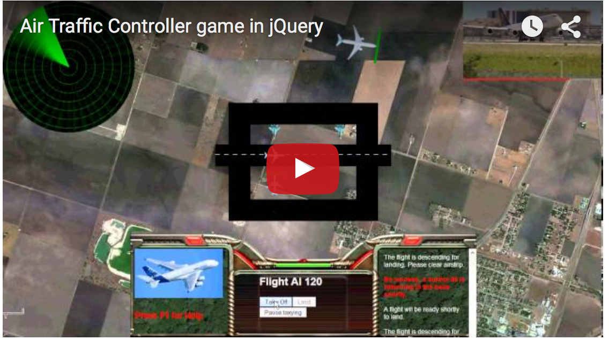

Below is the Youtube video showing game play

This is a simple game script which I developed. I game is played as below:
Your new job is to regulate air traffic to the airbase.
The airbase is shared between civilian and military aircrafts.
The airbase resorts squadron of formiddable Sukhois. Naturally, the preference to use the the airbase is given to military but when the airbase
is not used by military, your job is to depart civilian flights on time and land the incoming civilian airplanes.
A radar is provided which just displays
current aerial traffic status.
You have no control over the airstrip used by Sukhois. Sukhois take off and land without your formal permission. They keep performing their mission flights periodically.
This makes your task to manage civilian flight traffic difficult. It is expected that you manage the traffic in such a way that there is no collision among the planes on
airstrip. But, no condition/restriction is put to check whether the traffic is well managed by you. In other words, there is no scenario such as 'Game Over' even if
planes keep colliding on each other on airstrip .
You can do below operation on civilian flights.
- Takeoff - If the plane has green strip across it, it is sign that the plane should be airborne now. To sent the plane airborne, click it and then click the button
"Take Off". When you click the planes, a red strip appears across their nose to indicate that you have selected the plane.
All Sukhois indicate their intention to
takeoff by starting flash lights before 5 seconds of take-off. This should be a good hint to decide when to send the flights airborne. However, you should not rely
totally on this hint always.
- Landing - In similar way, when you click on "Land" button, the plane will perform landing
- Pause taxying - You can controll taxying of civil planes with this button.
- If you opted to see Youtube videos, videos will keep coming showing the activites going on the airbase (e.g. landing/takeoffs)
- Messages keep popping at the right side of panel shown at the bottom of the browser. White colored messages are for civilian airplanes while
red colored messages are for Sukhois